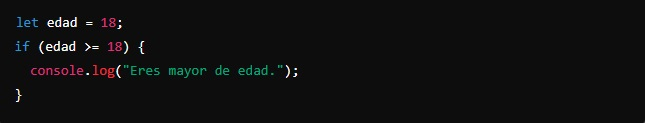
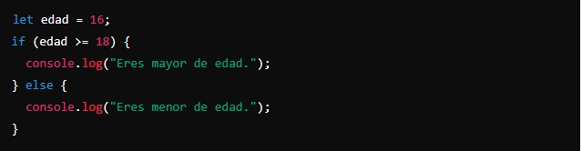
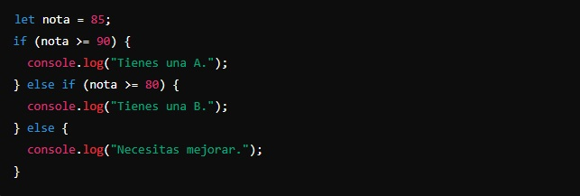

Un condicional en JavaScript es una manera de que tu programa tome decisiones basadas en ciertas condiciones. Piensa en un condicional como una pregunta que le haces a tu programa: "Si esto es verdadero, haz esto; si no, haz otra cosa."
Los condicionales son fundamentales en JavaScript porque te permiten tomar decisiones en tu código. Con if, else if, y else, puedes controlar el flujo de tu programa y hacer que responda de manera diferente según las condiciones que se cumplan.
Vamos a ver cómo funciona con algunos ejemplos simples.
- if:
El condicional if se usa para ejecutar un bloque de código solo si una condición específica es verdadera.
Ejemplo:
Aquí, if (edad >= 18) pregunta si edad es mayor o igual a 18. Si es verdadero, imprime "Eres mayor de edad."
- else:
La declaración else se usa para ejecutar un bloque de código si la condición del if es falsa.
Ejemplo:
Aquí, si edad no es mayor o igual a 18, se ejecuta el bloque else que imprime "Eres menor de edad."
- else if:
La declaración else if se usa para especificar una o varias condiciones si la primera condición if es falsa. Para encadenar las condiciones, se pueden usar varios else if, pero la última declaración siempre es else.
Ejemplo:
Aquí, si la nota no es mayor o igual a 90, pero es mayor o igual a 80, imprime "Tienes una B". Si ninguna de las condiciones es verdadera, imprime "Necesitas mejorar."